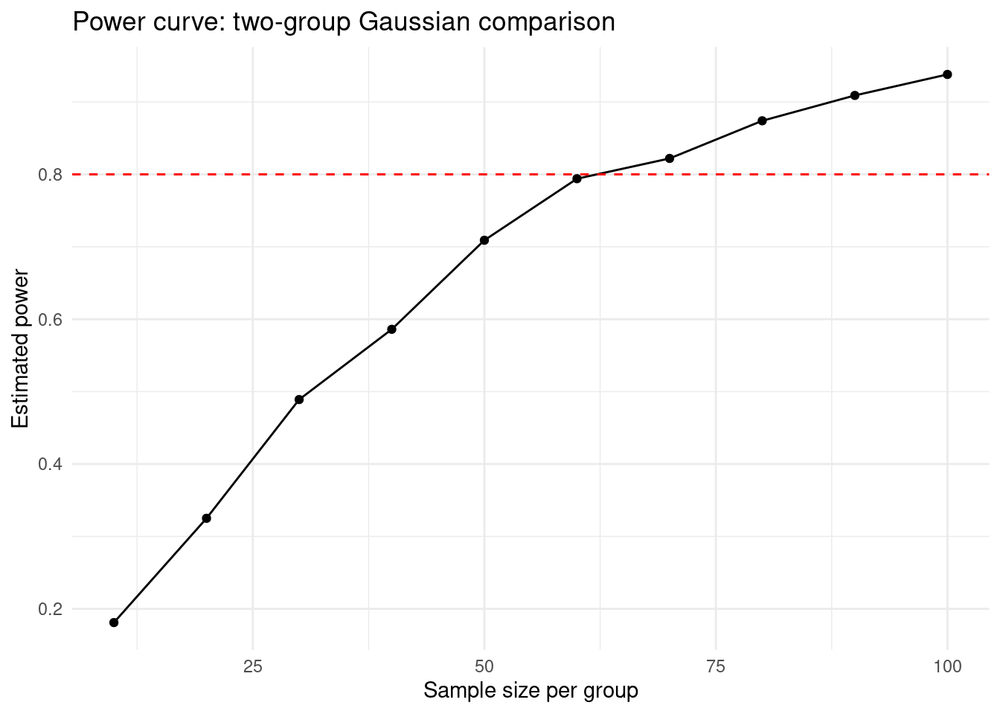
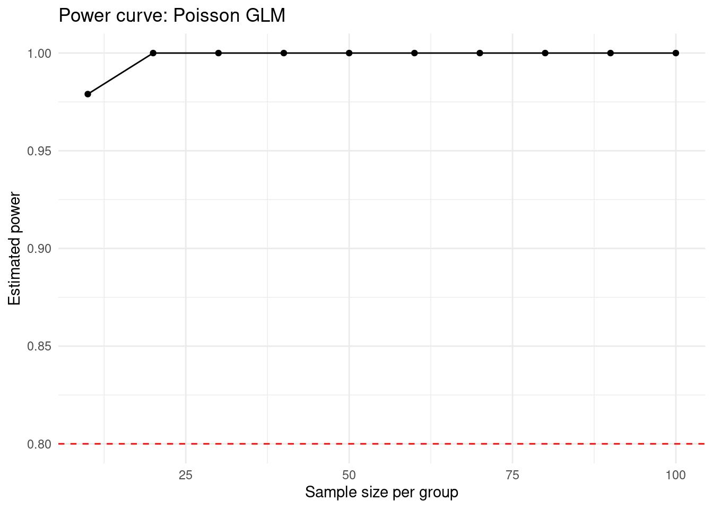
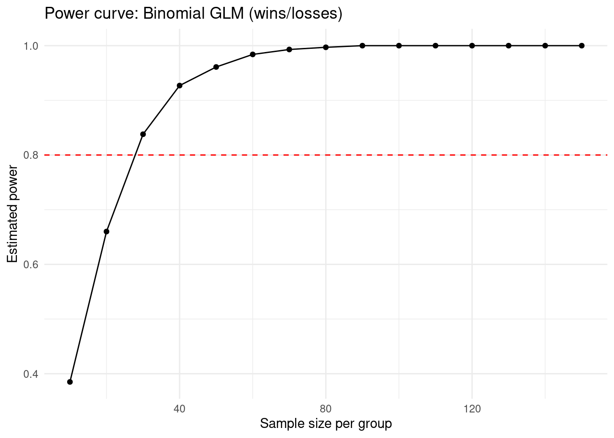

17 Simulation-Based Power Analysis
When we design an experiment, we want to be confident that if a real effect exists, our study has a reasonable chance of detecting it. This is a question of statistical power.
A study that is underpowered does not merely fail to find an effect — it produces uninformative evidence. Publishing the results of an underpowered study can actively mislead, because a non-significant result from an underpowered design cannot be interpreted as evidence of absence. Power analysis is therefore not a bureaucratic requirement for grant applications; it is a fundamental part of responsible study design.
In this chapter we will estimate power using simulation, which makes the underlying logic transparent and extends naturally to the GLMs and mixed models you already know.
17.1 What is statistical power?
Power is the probability that a statistical test correctly rejects the null hypothesis when the null hypothesis is false. It is conventionally denoted 1 − β, where β is the Type II error rate — the probability of failing to detect a real effect.
Four quantities determine power:
- Effect size: the magnitude of the true difference or relationship
- Sample size: the number of observations collected
- Variance: the residual variability in the outcome
- Alpha: the significance threshold (conventionally 0.05)
Increasing sample size, increasing effect size, or decreasing variance all increase power. These relationships are not independent — a large effect requires fewer observations to detect reliably than a small one, and a noisy outcome requires more observations than a clean one.
A power of 0.80 is the conventional minimum threshold for study design — meaning a 20% chance of missing a real effect. This threshold is arbitrary and was proposed by Cohen (1988) without strong justification. In contexts where missing a real effect has serious consequences — clinical trials, conservation decisions — higher thresholds are appropriate.
17.2 The simulation approach
Formula-based power calculations exist for simple designs (two-sample t-test, simple linear regression) but become intractable for more complex models. Simulation-based power analysis works for any model you can fit in R, and it makes the logic explicit.
The approach is straightforward. A simulation-based power analysis asks: if the true effect is X and I collect N observations, how often does my test correctly reject the null? The answer is obtained by repeating a hypothetical experiment many times and counting significant results.
The loop is always the same:
- Simulate data from a known data-generating process
- Fit the model to the simulated data
- Extract the p-value
- Record whether the result is significant
Repeat this loop 1000 times. Power is the proportion of iterations where p < 0.05.
Before simulating anything, you need to know what you are estimating. The causal estimand you identified in Chapter 16 — the specific effect on a specific path in your DAG — determines what effect size you are trying to detect and what model you should fit. A power analysis conducted for the wrong estimand, or using the wrong model family, answers a question you are not asking.
17.3 Effect size: the hardest part
The simulation is the easy part. Specifying the effect size is the hard part, and it is where most power analyses go wrong.
The question you need to answer is not what effect size gives me 80% power at my available sample size? That question selects an effect size because it is convenient. The correct question is what is the smallest effect that would be scientifically or practically meaningful in this system, and can my study detect it?
Effect size estimates typically come from four sources:
- Published prior studies in the same or related systems
- Pilot data collected by your own research group
- Theoretical or mechanistic predictions
- Expert judgement about the minimum biologically meaningful difference
Each source has different strengths and limitations, and each requires critical evaluation before use. The two most common failure modes are addressed below.
17.3.1 The winner’s curse
When a study is underpowered, it can only detect an effect when the observed estimate happens — by chance — to be larger than the true effect. Effects reported in underpowered studies are therefore systematically inflated. This is the winner’s curse, or a Type M error (Gelman & Carlin, 2014). A study that just crosses p < 0.05 in an underpowered design is not reporting the true effect size — it is reporting the effect size conditional on detection, which is a larger quantity.
If you borrow an inflated effect size from an underpowered prior study, your power analysis will conclude you need fewer observations than you actually do.
17.3.2 Missing variance estimates
To simulate from a Gaussian (OLS) model you need not just the effect size but the residual standard deviation. For Poisson and binomial models you need the scale of the linear predictor. These quantities are frequently unreported in published papers. Without them, you cannot correctly parameterise your simulation, and any guess you make introduces bias in a direction you cannot determine in advance.
For Gaussian models you need a residual standard deviation (sigma) to parameterise the simulation. Published papers report this in several different ways, and sometimes not at all. Work through the following in order.
17.3.3 Situation 1 — The paper reports a standard deviation directly
If the paper reports a standard deviation (SD) for each group, use the pooled SD as your sigma:
# Pooled SD from two groups of equal size
sd_control <- 2.1
sd_treatment <- 2.4
sigma <- sqrt((sd_control^2 + sd_treatment^2) / 2)If the paper reports a standard error (SE) rather than an SD, convert it first:
SE to SD: multiply SE by square root of n
n <- 30
se <- 0.38
sigma <- se * sqrt(n)17.3.4 Situation 2 — The paper reports a confidence interval
A 95% confidence interval can be used to back-calculate an approximate SD.
# Approximate sigma from 95% CI width
# CI width = upper - lower
ci_width <- 3.2 - 1.1 # example
n <- 25 # sample size per group
# The CI width ≈ 2 * 1.96 * SE of the difference
# SE of difference = sigma * sqrt(2/n)
# Rearranging:
sigma <- (ci_width / (2 * 1.96)) / sqrt(2 / n)This is an approximation — treat it as a reasonable starting point for a sensitivity analysis rather than a precise estimate.
17.3.5 Situation 3 — The paper reports only means and a p-value
This is the most common and most frustrating situation. You have two options.
The first is to search for a related study that does report a standard deviation, on the grounds that residual variance in similar systems with similar measurement approaches is likely to be in the same range.
The second is to make an explicit and transparent assumption, and then test whether your conclusion changes if that assumption is wrong. If the paper reports means but no SD, choose a round number for sigma that seems plausible given the scale of the response variable — for instance, if the mean response is around 15 units, a standard deviation of 3 to 8 units would represent low to moderate variability. Run your power curve at both ends of that range.
# Run once with a conservative (high) variance assumption
sigma <- 8
# Then run again with a more optimistic (low) variance assumption
sigma <- 3
17.3.6 Situation 4 — No prior data exists at all
If no variance estimate is obtainable from any source, a Gaussian power analysis cannot be meaningfully parameterised. This is the situation described in the absent evidence scenario from the workshop interlude. Your options are to collect pilot data before committing to a sample size, to conduct a sequential design where an interim analysis informs the final sample size, or to report honestly that a formal power analysis is not possible under current information.
17.3.7 Why Poisson and binomial models do not need a separate variance estimate
For Poisson models the variance is fully determined by the mean — var(Y) = lambda. You do not need to specify it separately because it is implicit in your choice of lambda_control and effect. For binomial models the variance is similarly determined by the probability and the number of trials — var(Y) = n * p * (1 - p). This is one of the practical advantages of these model families for power analysis: fewer unknowns to specify. The trade-off is that both families make strong distributional assumptions that may not hold in practice — Poisson data is frequently overdispersed, and binomial data may show extra-binomial variation — but addressing those complications is beyond the scope of this chapter.
A power analysis is only as trustworthy as its inputs. If no prior quantitative data exists — no pilot study, no comparable system, no variance estimate — a power analysis produces a precise-looking number that is not grounded in anything reliable. In such cases it is more scientifically honest to conduct a sensitivity analysis across a range of plausible effect sizes, or to state explicitly that a formal power analysis cannot be conducted, than to produce a spuriously precise estimate.
17.4 Building the simulation
We use two packages throughout this chapter. tidyverse for data manipulation and plotting, and broom for tidy model output.
The simulation is built in three stages. Each stage adds one layer of complexity. Work through them in sequence.
17.4.1 Stage 1 — A single iteration
Before iterating, write one complete simulation explicitly. This makes the logic visible and ensures you understand each step before it is wrapped in a loop.
The example below uses a Gaussian (OLS) model — a two-group comparison with a continuous outcome.
set.seed(123)
# --- Define parameters ---
n <- 30 # sample size PER group
effect <- 0.5 # difference in means between groups (on response scale)
sigma <- 1.0 # residual standard deviation
alpha <- 0.05 # significance threshold
# --- Step 1: Simulate data ---
group <- rep(c("control", "treatment"), each = n)
response <- c(
rnorm(n, mean = 0, sd = sigma), # control group
rnorm(n, mean = effect, sd = sigma) # treatment group: shifted by effect
)
sim_data <- tibble(group, response)
sim_data| group | response |
|---|---|
| control | -0.5604756 |
| control | -0.2301775 |
| control | 1.5587083 |
| control | 0.0705084 |
| control | 0.1292877 |
| control | 1.7150650 |
| control | 0.4609162 |
| control | -1.2650612 |
| control | -0.6868529 |
| control | -0.4456620 |
| control | 1.2240818 |
| control | 0.3598138 |
| control | 0.4007715 |
| control | 0.1106827 |
| control | -0.5558411 |
| control | 1.7869131 |
| control | 0.4978505 |
| control | -1.9666172 |
| control | 0.7013559 |
| control | -0.4727914 |
| control | -1.0678237 |
| control | -0.2179749 |
| control | -1.0260044 |
| control | -0.7288912 |
| control | -0.6250393 |
| control | -1.6866933 |
| control | 0.8377870 |
| control | 0.1533731 |
| control | -1.1381369 |
| control | 1.2538149 |
| treatment | 0.9264642 |
| treatment | 0.2049285 |
| treatment | 1.3951257 |
| treatment | 1.3781335 |
| treatment | 1.3215811 |
| treatment | 1.1886403 |
| treatment | 1.0539177 |
| treatment | 0.4380883 |
| treatment | 0.1940373 |
| treatment | 0.1195290 |
| treatment | -0.1947070 |
| treatment | 0.2920827 |
| treatment | -0.7653964 |
| treatment | 2.6689560 |
| treatment | 1.7079620 |
| treatment | -0.6231086 |
| treatment | 0.0971152 |
| treatment | 0.0333446 |
| treatment | 1.2799651 |
| treatment | 0.4166309 |
| treatment | 0.7533185 |
| treatment | 0.4714532 |
| treatment | 0.4571295 |
| treatment | 1.8686023 |
| treatment | 0.2742290 |
| treatment | 2.0164706 |
| treatment | -1.0487528 |
| treatment | 1.0846137 |
| treatment | 0.6238542 |
| treatment | 0.7159416 |
Whenever we run a set of code that uses simulation, then numbers are generated (pseudo)randomly. When we use set.seed() it initializes a pseudorandom number generator (PRNG) with a specific integer value, ensuring that subsequent “random” functions (like rnorm or sample) produce the exact same, reproducible sequence. This is essential if we want our simulations to be reproducible.
[1] TRUERun this code several times. Because the data are simulated randomly, the result will differ between runs. Sometimes the test is significant, sometimes not. This variability is precisely what the simulation quantifies.
17.4.2 Stage 2 — Repeating the iteration
replicate() repeats an expression a specified number of times and collects the results. We use it to run our single iteration 1000 times.
set.seed(123)
# --- Define parameters ---
n <- 30
effect <- 0.5
sigma <- 1.0
alpha <- 0.05
n_sims <- 1000
# --- Repeat 1000 times ---
p_values <- replicate(n_sims, {
group <- rep(c("control", "treatment"), each = n)
response <- c(
rnorm(n, mean = 0, sd = sigma),
rnorm(n, mean = effect, sd = sigma)
)
sim_data <- tibble(group, response)
model <- lm(response ~ group, data = sim_data)
tidy(model) |>
filter(term == "grouptreatment") |>
pull(p.value)
})
# --- Calculate power ---
power <- mean(p_values < alpha)
power[1] 0.483mean(p_values < alpha) works because p_values < alpha returns a logical vector of TRUE and FALSE values, and mean() treats TRUE as 1 and FALSE as 0. The result is the proportion of iterations where the test was significant — which is the estimated power.
Set effect <- 0 and run the code. What proportion of runs return TRUE? This is your Type I error rate — it should be approximately equal to alpha.
17.4.3 Stage 3 — The power curve
A power curve shows how power changes as a function of sample size. We generate it by repeating Stage 2 across a vector of sample sizes using map_dfr() from purrr.
set.seed(123)
# --- Define parameters ---
effect <- 0.5
sigma <- 1.0
alpha <- 0.05
n_sims <- 1000
sample_sizes <- seq(10, 100, by = 10)
# --- Iterate over sample sizes ---
power_curve <- map_dfr(sample_sizes, function(n) {
p_values <- replicate(n_sims, {
group <- rep(c("control", "treatment"), each = n)
response <- c(
rnorm(n, mean = 0, sd = sigma),
rnorm(n, mean = effect, sd = sigma)
)
sim_data <- tibble(group, response)
model <- lm(response ~ group, data = sim_data)
tidy(model) |>
filter(term == "grouptreatment") |>
pull(p.value)
})
tibble(n = n, power = mean(p_values < alpha))
})
# --- Plot ---
ggplot(power_curve, aes(x = n, y = power)) +
geom_line() +
geom_point() +
geom_hline(yintercept = 0.80, linetype = "dashed", colour = "red") +
labs(
x = "Sample size per group",
y = "Estimated power",
title = "Power curve: two-group Gaussian comparison"
) +
theme_minimal()
The dashed red line marks the 0.80 threshold. Read off the x-axis to identify the minimum sample size required to achieve adequate power under your assumed effect size and variance.
By now you are running quite a few iterations of your simulations. If you want the code to run faster you can reduce the valye of n_sims but note that this will make power less reliable
17.5 Extending to GLMs
The simulation structure is identical for GLMs. Only two things change: the data-generating step, and the model call. The replicate() loop and the power calculation are unchanged.
The critical difference is that GLMs use a link function — a transformation applied between the linear predictor and the expected value of the response. This exists because some responses are bounded: counts cannot be negative, and probabilities must lie between 0 and 1. The link function maps an unbounded linear predictor onto a constrained response scale.
You must specify your effect size on the link scale, not the response scale. Specifying an effect on the wrong scale produces a simulation that runs without error but answers the wrong question.
| Model | Link function | Effect scale | Back-transform with |
|---|---|---|---|
| Poisson | Log | Log rate ratio | exp() |
| Binomial | Logit | Log odds ratio | plogis() |
This is the step where most errors occur. Follow this procedure every time.
17.5.1 Step 1 — What do you actually know?
Ask yourself: is my effect size stated as a difference on the raw response scale, or as a ratio? Published studies typically report one of three things:
A mean difference (“the treatment group had 3.2 more species”)
A ratio (“the treatment doubled the count rate”)
A standardised effect size such as Cohen’s d
17.5.2 Step 2 — What scale does your model work on?
| Model | Link function | Effect scale | Raw scale |
|---|---|---|---|
| Gaussian | Identity | Raw difference | Same |
| Poisson | Log | Log scale | Count |
| Binomial | Logit | Log odds ratio | Probability |
For Gaussian models, the effect size goes directly into the simulation as a mean difference. No conversion is needed.
For Poisson and binomial models, you must convert.
17.5.3 Step 3 — Converting for Poisson
If you have a ratio (e.g. treatment doubles the rate, ratio = 2):
effect <- log(2) # log() converts a ratio to the log scaleIf you have a raw count difference (e.g. treatment adds 3 counts to a baseline of 10):
# First express as a ratio: (10 + 3) / 10 = 1.3
effect <- log(1.3)Check your work: exp(effect) should give back the ratio you started with.
17.5.4 Step 4 — Converting for Binomial
If you have two probabilities (e.g. control = 0.3, treatment = 0.45):
Express the treatment probability as a shift on the log-odds scale
effect <- qlogis(0.45) - qlogis(0.3)If you have a log-odds ratio directly from a published logistic regression coefficient, use it as-is — it is already on the correct scale.
Check your work: plogis(qlogis(prob_control) + effect) should return your intended treatment probability.
17.5.4.1 The one rule to remember
Never add an effect directly to a probability or a count inside the simulation. Always work through the link scale. If you are unsure, compute what your effect implies on the response scale using exp() or plogis() and check that it is biologically plausible before running 1000 iterations.
17.5.5 Poisson simulation
set.seed(123)
# --- Define parameters ---
n <- 30
lambda_control <- 5 # baseline count rate (response scale)
effect <- 0.69 # effect on LOG scale: log(2) ≈ 0.69 = doubling
alpha <- 0.05
# --- Step 1: Simulate data ---
group <- rep(c("control", "treatment"), each = n)
# Convert from log scale to response scale with exp()
lambda_treatment <- lambda_control * exp(effect)
response <- c(
rpois(n, lambda = lambda_control),
rpois(n, lambda = lambda_treatment)
)
sim_data <- tibble(group, response)
# --- Step 2: Fit the model ---
# glm() with family = poisson uses log link by default
# this matches the scale on which we specified the effect
model <- glm(response ~ group, data = sim_data, family = poisson)
# --- Step 3: Extract p-value ---
p_value <- tidy(model) |>
filter(term == "grouptreatment") |>
pull(p.value)
p_value < alpha[1] TRUEset.seed(123)
# --- Define parameters ---
lambda_control <- 5
effect <- 0.69
alpha <- 0.05
n_sims <- 1000
sample_sizes <- seq(10, 100, by = 10)
power_curve_poisson <- map_dfr(sample_sizes, function(n) {
p_values <- replicate(n_sims, {
group <- rep(c("control", "treatment"), each = n)
lambda_treatment <- lambda_control * exp(effect)
response <- c(
rpois(n, lambda = lambda_control),
rpois(n, lambda = lambda_treatment)
)
sim_data <- tibble(group, response)
model <- glm(response ~ group, data = sim_data, family = poisson)
tidy(model) |>
filter(term == "grouptreatment") |>
pull(p.value)
})
tibble(n = n, power = mean(p_values < alpha))
})
ggplot(power_curve_poisson, aes(x = n, y = power)) +
geom_line() +
geom_point() +
geom_hline(yintercept = 0.80, linetype = "dashed", colour = "red") +
labs(
x = "Sample size per group",
y = "Estimated power",
title = "Power curve: Poisson GLM"
) +
theme_minimal()
17.5.6 Binomial simulation
set.seed(123)
# --- Define parameters ---
n <- 30
prob_control <- 0.3 # baseline win probability (response scale)
effect <- 0.5 # effect on LOGIT scale
# plogis(qlogis(0.3) + 0.5) ≈ 0.42
alpha <- 0.05
# --- Step 1: Simulate data ---
group <- rep(c("control", "treatment"), each = n)
# qlogis() converts probability to log-odds scale
# add effect on log-odds scale
# plogis() converts back to probability
prob_treatment <- plogis(qlogis(prob_control) + effect)
# Each subject has a fixed number of trials
# We record wins and losses separately
trials <- 10 # number of trials per subject
wins <- c(
rbinom(n, size = trials, prob = prob_control), # control group wins
rbinom(n, size = trials, prob = prob_treatment) # treatment group wins
)
losses <- trials - wins # losses are simply trials minus wins
sim_data <- tibble(group, wins, losses)
# --- Step 2: Fit the model ---
# cbind(wins, losses) passes a two-column response matrix
# glm() with family = binomial uses logit link by default
model <- glm(cbind(wins, losses) ~ group,
data = sim_data,
family = binomial)
# --- Step 3: Extract p-value ---
p_value <- tidy(model) |>
filter(term == "grouptreatment") |>
pull(p.value)
p_value < alpha[1] FALSEset.seed(123)
# --- Define parameters ---
prob_control <- 0.3
effect <- 0.5
trials <- 10 # number of trials per subject
alpha <- 0.05
n_sims <- 1000
sample_sizes <- seq(10, 150, by = 10)
power_curve_binomial <- map_dfr(sample_sizes, function(n) {
p_values <- replicate(n_sims, {
group <- rep(c("control", "treatment"), each = n)
prob_treatment <- plogis(qlogis(prob_control) + effect)
wins <- c(
rbinom(n, size = trials, prob = prob_control),
rbinom(n, size = trials, prob = prob_treatment)
)
losses <- trials - wins
sim_data <- tibble(group, wins, losses)
model <- glm(cbind(wins, losses) ~ group,
data = sim_data,
family = binomial)
tidy(model) |>
filter(term == "grouptreatment") |>
pull(p.value)
})
tibble(n = n, power = mean(p_values < alpha))
})
ggplot(power_curve_binomial, aes(x = n, y = power)) +
geom_line() +
geom_point() +
geom_hline(yintercept = 0.80, linetype = "dashed", colour = "red") +
labs(
x = "Sample size per group",
y = "Estimated power",
title = "Power curve: Binomial GLM (wins/losses)"
) +
theme_minimal()
When each subject contributes multiple trials, the amount of information per subject depends on both the number of trials and the baseline probability.
However, power remains sensitive to the baseline probability. When prob_control is close to 0 or 1, most subjects will have wins or losses concentrated at one extreme, reducing the effective variability in the response and therefore the information available to estimate the group difference. Power is maximised when the baseline probability is near 0.5, where variability in the binomial response is greatest
17.6 Interpreting power curves
A power curve is not a guarantee — it is an estimate conditional on your assumptions. Before acting on it, ask three questions.
First: where did the effect size come from? If it came from an underpowered prior study, the winner’s curse means it is likely inflated. Your curve is optimistic.
Second: where did the variance estimate come from? If it was guessed, or borrowed from a different system, the curve may be wrong in either direction.
Third: does the model in the simulation match the model you will fit? If you simulate from a Gaussian but plan to fit a Poisson, the power estimate is for the wrong test.
When reporting a power analysis in a methods section, you should state: the model family used in the simulation, the effect size used and its source, the variance estimate used and its source, the number of simulations run, and the sample size at which the target power threshold was reached. A power analysis reported without justification of its inputs is not a useful contribution to a methods section.
17.7 Quick reference
| Model | Data-generating function | Key parameters | Effect scale |
|---|---|---|---|
| Gaussian | rnorm(n, mean, sd) |
mean = group mean; sd = residual SD |
Response |
| Poisson | rpois(n, lambda) |
lambda = count rate |
Log: use exp()
|
| Binomial | rbinom(n, size = 1, prob) |
prob = event probability |
Logit: use plogis()
|
17.8 Exercises
Exercise 1: Understanding the simulation loop
Using the Gaussian Stage 1 template:
a) Set effect <- 0 and run the code 20 times manually. How often does p_value < alpha return TRUE? What does this tell you about Type I error?
b) Set effect <- 2 and sigma <- 1. Before running Stage 2, predict whether power will be higher or lower than when effect <- 0.5. Run it and check.
c) Set effect <- 0.5 and sigma <- 3. What do you expect to happen to power relative to sigma <- 1? Why?
a) With effect <- 0, the null hypothesis is true. p_value < alpha returns TRUE approximately 5% of the time — this is the Type I error rate, equal to alpha.
b) With effect <- 2 and sigma <- 1, the signal-to-noise ratio is much larger. Power will be substantially higher — close to 1.0 at n = 30.
c) With sigma <- 3, the residual variance is nine times larger relative to the effect. The signal-to-noise ratio falls, and power decreases substantially. More observations are required to compensate.
Exercise 2: Poisson parameterisation
a) You want to simulate a Poisson model where the treatment doubles the count rate. The baseline rate is 8. What value should effect take? Calculate it before running the simulation.
b) A colleague sets effect <- 2 intending to represent a doubling of the count rate. What rate ratio are they actually simulating? How does the power curve differ from the correctly parameterised version?
c) Using the Poisson power curve template, find the sample size required to achieve 80% power for a 50% increase in count rate (rate ratio = 1.5) from a baseline of 10.
a) A rate ratio of 2 corresponds to log(2) ≈ 0.693. Set effect <- log(2).
b) effect <- 2 corresponds to a rate ratio of exp(2) ≈ 7.39 — nearly a sevenfold increase. The power curve will reach 0.80 at a much smaller sample size than the correctly parameterised version, producing an optimistic and incorrect power estimate.
c) A rate ratio of 1.5 corresponds to effect <- log(1.5) ≈ 0.405. Set lambda_control <- 10 and run the power curve. The required sample size will depend on the simulation but is typically in the range of 50–70 per group.
Exercise 3: Sensitivity analysis
A power analysis is a model of your experiment. Like all models, it should be interrogated for sensitivity to its assumptions. Using the Gaussian power curve template:
a) Run the power curve for effect <- 0.5 and sigma <- 1. Record the sample size at which power crosses 0.80.
b) Now run it for effect <- 0.3 (a more conservative effect size estimate) with the same sigma. How does the required sample size change?
c) A published study reports a standard deviation of 1.2 rather than 1.0. Rerun with sigma <- 1.2 and effect <- 0.5. What happens?
d) Based on your results, write two sentences describing how you would present a sensitivity analysis in a methods section.
a) With effect <- 0.5 and sigma <- 1, power crosses 0.80 at approximately n = 50–60 per group (results vary between simulation runs).
b) With effect <- 0.3, the required sample size increases substantially — approximately n = 130–180 per group. Smaller effects require proportionally more observations.
c) With sigma <- 1.2, the required sample size increases relative to sigma <- 1.0 at the same effect size. Larger residual variance reduces the signal-to-noise ratio.
d) Example: “We conducted a sensitivity analysis by varying the assumed effect size between 0.3 and 0.5 and the residual standard deviation between 1.0 and 1.2, based on the range of estimates reported in the prior literature. Required sample sizes ranged from approximately 55 to 175 per group across these scenarios; we selected a sample size of 180 to ensure adequate power under the most conservative plausible assumptions.”
Exercise 4: Connecting DAGs to power analysis
Return to the farming intensity DAG from Chapter 16:
a) The adjustment set for the total effect of farming intensity on biodiversity is {soil_quality}. What model should you fit, and what effect are you estimating in your power analysis?
b) Biodiversity is measured as a species count. Which model family should your simulation use?
c) You find a published study reporting that high-intensity farming is associated with a 40% reduction in species counts. The study had n = 22 and the effect just reached p < 0.05. Should you use this effect size directly in your power analysis? Justify your answer.
d) Write the data-generating step for a single iteration of this power analysis, using appropriate R functions.
a) You should fit glm(biodiversity ~ farming_intensity + soil_quality, family = poisson). You are estimating the direct effect of farming intensity on biodiversity after conditioning on the confounder soil quality.
b) Species counts are non-negative integers — a Poisson model is appropriate (or negative binomial if overdispersion is suspected, though this requires a different fitting approach).
c) You should not use this effect size directly. The study had n = 22 and the effect just crossed p < 0.05 — this is a small, underpowered study. The winner’s curse means the reported effect is likely inflated relative to the true effect. Using it will produce an optimistic power estimate and an underpowered study.
d)
# A 40% reduction corresponds to a rate ratio of 0.6
# On the log scale: log(0.6) ≈ -0.51
lambda_control <- 12 # plausible baseline species count
effect <- log(0.6) # 40% reduction on log scale
group <- rep(c("low_intensity", "high_intensity"), each = n)
lambda_treatment <- lambda_control * exp(effect)
response <- c(
rpois(n, lambda = lambda_control),
rpois(n, lambda = lambda_treatment)
)17.9 Summary
Simulation-based power analysis:
- Estimates power empirically by repeating hypothetical experiments
- Works for any model you can fit in R
- Has three stages: single iteration → replicate → power curve
Effect size specification:
- Is a scientific judgement, not a statistical one
- Must be justified with reference to prior data or minimum meaningful differences
- Is subject to the winner’s curse when drawn from underpowered prior studies
GLM simulations:
- Require the effect to be specified on the link scale
- Use
exp()for Poisson (log link) andplogis()for binomial (logit link) - Specifying the effect on the wrong scale is a silent error
Interpreting power curves:
- Are estimates conditional on their inputs
- Should be accompanied by sensitivity analyses
- Do not guarantee adequate power — they estimate it under stated assumptions
17.10 Further reading
- Paper: Gelman, A. & Carlin, J. (2014). Beyond power calculations: Assessing Type S (sign) and Type M (magnitude) errors. Perspectives on Psychological Science, 9(6), 641–651.
- Paper: Button, K.S. et al. (2013). Power failure: why small sample size undermines the reliability of neuroscience. Nature Reviews Neuroscience, 14(5), 365–376.
- Book: Cohen, J. (1988). Statistical Power Analysis for the Behavioral Sciences (2nd ed.). Lawrence Erlbaum Associates.
-
Package: The
pwrpackage provides formula-based power calculations for simple designs as a complement to simulation.